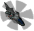
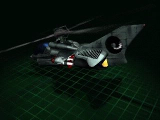

Atylla


In-game info panel
- Speed:
- 320 km/h
- Energy (HP):
- 300
- Sight range:
- 500 m
- Production time:
- 26 s
| Weapon | Power | Range | Targets |
|---|---|---|---|
| Low-calibre Gun | 12 | 1-6 | GA |
| Alfa Rocket | 11 | 3-14 | G |
Costs: Extract 1400 Iron 1000 Carbon 750 Titanium 0
Description
This is our standard light reconnaissance/attack helicopter, which still uses conventional weapons and mechanics. Due to its reliability and repeated testing during terrestrial wars, it has been produced for over 50 years. Used for infantry backup in difficult terrain unsuitable for tanks. In contact with alien units it is outdated and is slowly being withdrawn from army service. Its weapons include Alpha class rockets and 14mm guns. It 's unable to withstand enemy vehicle fire for long periods, and is more suited to hit and run missions at point defences.
Related
- Requires
- Heavy Factory, Pioneer
- Produced by
- Heavy Factory
- Weapons
- Low-calibre Gun (slot 0), Alfa Rocket (slot 1)
- Upgraded by
- Heimann Compressor
Config values not shown in game (6)
HUMAN- 3
TURN_SPEED- 0.01
AIUNIT- AIUNIT_HELICOPTER
SOLDIER_TYPE- SOLDIERTYPE_UNKNOWN
INDEPENDENT- nigdy
TYPE- R_hHELIKOPTER